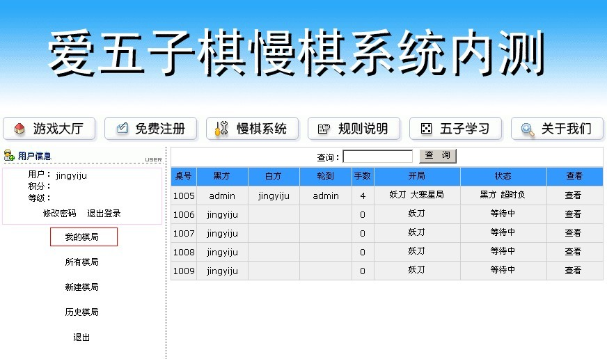
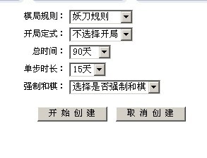
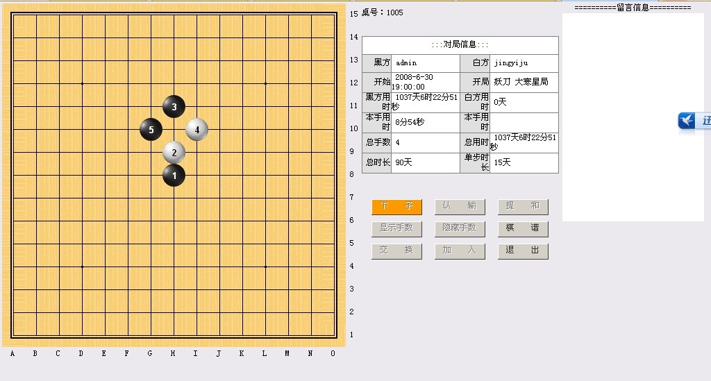

爱五子棋网新版慢棋系统内测
#1 爱五子棋网新版慢棋系统内测 作者：小丸.net 发表时间：2011-5-4 1:36:28
爱五子棋网新版慢棋系统已经进入紧张的内测，该系统拥有目前流行的RIF规则，山口规则，妖刀规则，普通规则等，规则正在不断的添加中。
来看看一些界面：

添加棋局

开始下棋：

网站美工做得比较简单，因此，如果有在美工方面有特长的兄弟请联系我，谢谢！
［ 逆刃 于 2011-5-4 8:51:42 时花20金币送鲜花一朵］
［ 梧桐风 于 2011-5-4 13:11:21 时花20金币送鲜花一朵］
［ 第五象限 于 2011-5-4 21:41:33 时花20金币送鲜花一朵］
#2 Re:爱五子棋网新版慢棋系统内测 作者：潇洒 发表时间：2011-5-4 11:03:48
支持..
#3 Re:爱五子棋网新版慢棋系统内测 作者：潇洒 发表时间：2011-5-4 11:04:20
啥时候公开测试?
#4 Re:爱五子棋网新版慢棋系统内测 作者：梧桐风 发表时间：2011-5-4 13:10:32
强烈支持啊，爱死小丸子和工作人员啦~加一下“塔拉规则，一手交换规则，连换规则” 加油~
加油~［此帖子已被 梧桐风 在 2011-5-4 13:11:55 编辑过］
#5 Re:爱五子棋网新版慢棋系统内测 作者：梧桐风 发表时间：2011-5-4 13:13:19
这个界面其实不错，下棋的界面就应该简结舒适#6 Re:爱五子棋网新版慢棋系统内测 作者：梧桐风 发表时间：2011-5-4 17:50:48
要不要把联棋功能也放上去啊
#7 Re:爱五子棋网新版慢棋系统内测 作者：战乱 发表时间：2011-5-4 18:05:38
这个东西不错。支持！！！！
#8 Re:爱五子棋网新版慢棋系统内测 作者：维尔斯特拉斯 发表时间：2011-5-4 19:20:00
不错哈~支持一下~#9 Re:爱五子棋网新版慢棋系统内测 作者：失落刀 发表时间：2011-5-5 5:39:25
建议这里增加设置一个按钮“比赛对局”
可以显示历次大型正式慢棋比赛对局。
~~~~~~~~~~~~~~~~~~~~~~~~~~~~~~~~~~~~~~~~~~~~~~
强烈期待慢棋系统。
#10 Re:爱五子棋网新版慢棋系统内测 作者：梧桐风 发表时间：2011-5-5 10:02:17
同期待~
#11 Re:爱五子棋网新版慢棋系统内测 作者：孤竹 发表时间：2011-5-5 13:32:22
不错，已经内测了哈
#12 Re:爱五子棋网新版慢棋系统内测 作者：山东星月皎璨 发表时间：2011-5-19 13:38:51
不错，我想比赛，缺少威望